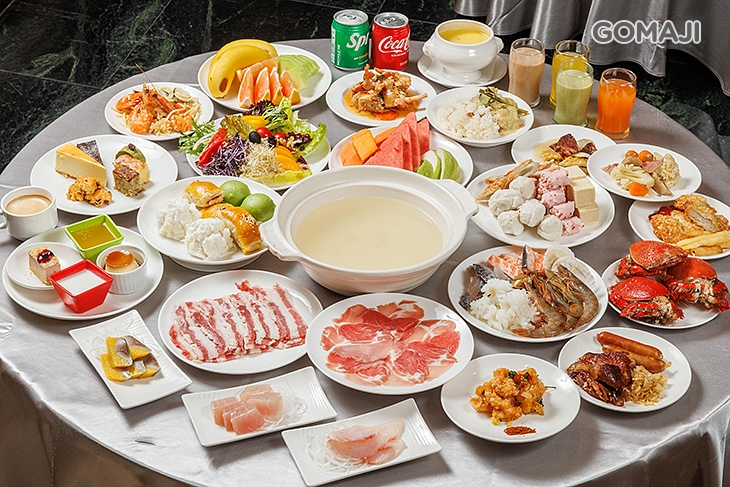
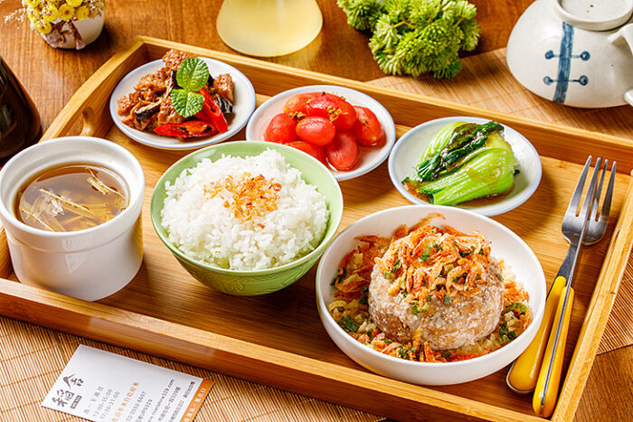
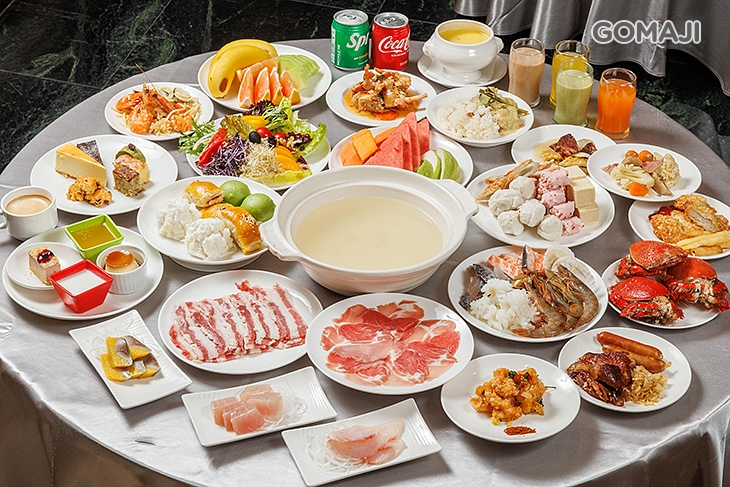
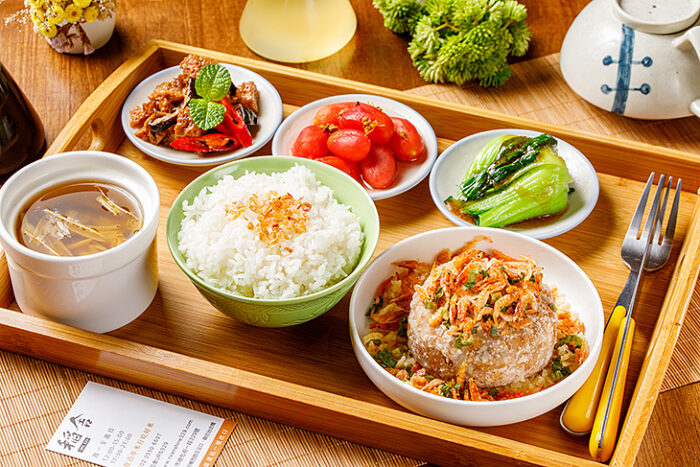

微景森林
在水之庭園裡創造出屬於自己的微型森林，享受微風與鳥鳴，親手創造獨一無二的微景生態，在自然的環境中療癒心靈，把虹夕諾雅 谷關的自然回憶直接帶回家。

啡日常・靜萃時光
在戲水池畔體驗手沖茶咖啡，享受茶香與咖啡香的同時，感受沁涼的水之特等席，沉浸在綠蔭環繞的水之庭園，創造非日常的悠然時光。
在水之庭園裡創造出屬於自己的微型森林，享受微風與鳥鳴，親手創造獨一無二的微景生態，在自然的環境中療癒心靈，把虹夕諾雅 谷關的自然回憶直接帶回家。
在戲水池畔體驗手沖茶咖啡，享受茶香與咖啡香的同時，感受沁涼的水之特等席，沉浸在綠蔭環繞的水之庭園，創造非日常的悠然時光。
台灣台中市和平區博愛里東關路一段溫泉巷16號
**搭乘高鐵**
台北高鐵站/高雄左營高鐵站 → 台灣高鐵 (約1小時) → 台中高鐵站 → 接駁車 (約1個半小時) → 抵達虹夕諾雅 谷關。
**自行開車**
台北市內/高雄市內 → 國道1號 → 台中 → 國道4號 → 豐原端出口 → 台3線接台8線 → 抵達虹夕諾雅 谷關。
**接駁服務**
提供自桃園國際機場、台北松山機場、臺中高鐵站、和臺中國際機場前往虹夕諾雅 谷關之接駁服務。

 


